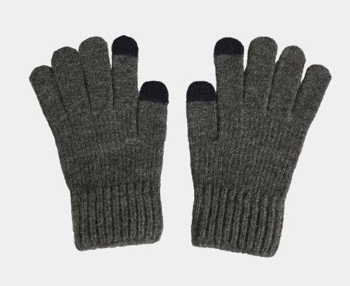
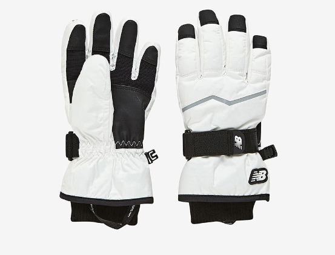

털장갑
울, 플리스, 니트 소재로 되어있는 장갑을 선택하는 것이 좋습니다.
방한성에 초점을 두었지만 가볍고 폭신폭신한 촉감에 많은 사람들의 사랑을 받는 장갑입니다.
캐주얼한 스타일을 연출하기에 적합하여 일상에서 착용하기 좋은 장갑입니다.
그러나 습기에 약해 눈이나 비가 오는 날에는 방수 기능이 부족할 수 있습니다.
또한 털은 오래 사용하면 털이 뭉치거나 빠질 수 있어 관리가 필요합니다.
활동적인 야외 스포츠보다는 일상적인 외출이나 가벼운 산책에 착용해보면 어떨까요?
가죽장갑
가죽장갑은 고급스러운 외관과 뛰어난 내구성으로 겨울철 인기 있는 방한 아이템입니다.
바람을 효과적으로 막아주어 보온성이 우수하며, 착용할수록 손에 맞게 길들여져 편안한 핏을 제공합니다.
방수 성능이 기본적으로 좋지만, 가죽 관리가 소홀하면 갈라지거나 변색될 수 있습니다.
터치 스크린 기능이 있는 제품도 많아 실용적이며, 일상부터 비즈니스 룩까지 다양한 스타일에 잘 어울립니다.
관리 시 가죽 전용 크림을 발라주면 장갑의 수명을 연장할 수 있습니다.
벙어리장갑
벙어리 장갑은 손가락이 하나의 공간에 모여 있어 보온성이 뛰어납니다.
추운 겨울철 야외 활동 시 열 손실을 최소화해 손을 따뜻하게 유지합니다.
손가락이 분리된 장갑보다 세밀한 작업이 어렵지만 방한 효과는 더 우수합니다.
스키, 스노보드 등 겨울 스포츠나 강추위 환경에 적합합니다.
방수 및 방풍 기능이 있는 소재를 선택하면 더욱 실용적으로 사용할 수 있습니다.

터치장갑
터치장갑은 장갑을 낀 상태에서도 스마트폰이나 태블릿을 사용할 수 있는 실용적인 아이템입니다.
손가락 끝 부분에 전도성 소재가 적용되어 터치 스크린과의 상호 작용이 가능합니다.
일상적인 외출이나 출퇴근 시 스마트 기기를 자주 사용하는 사람들에게 특히 유용합니다.
니트, 가죽 등 다양한 소재로 제작되어 스타일과 보온성을 동시에 제공합니다.
전도성 소재의 내구성을 고려해 품질 좋은 제품을 선택하는 것이 중요합니다.

스키장갑
스키장갑은 추운 겨울철 스키나 스노보드 등 야외 스포츠 활동에 필수적인 방한 장비입니다.
방수와 방풍 기능이 있어 눈과 찬바람으로부터 손을 보호합니다.
두툼한 충전재가 있어 보온성이 뛰어나며, 손을 따뜻하게 유지해줍니다.
강화된 손목 스트랩과 조임 장치로 착용감을 조절하고 눈이 들어오는 것을 방지합니다.
내구성이 우수해 거친 야외 환경에서도 오래 사용할 수 있습니다.